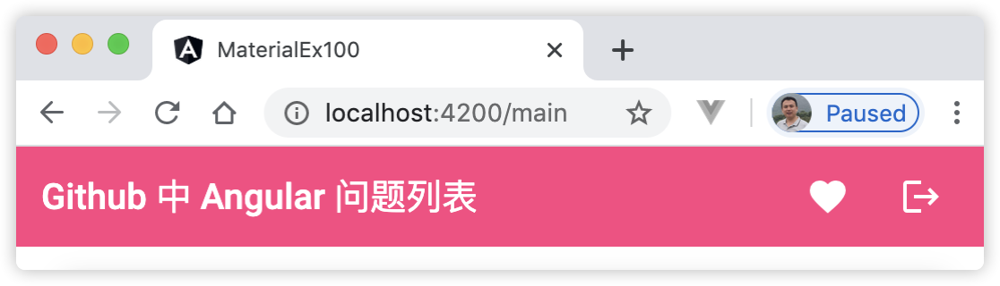
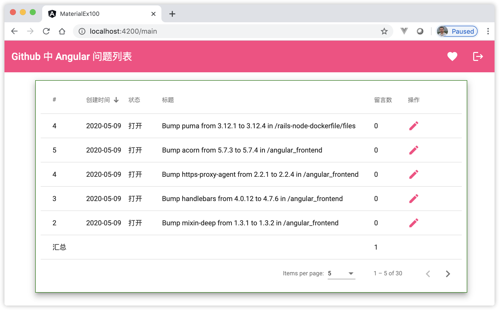
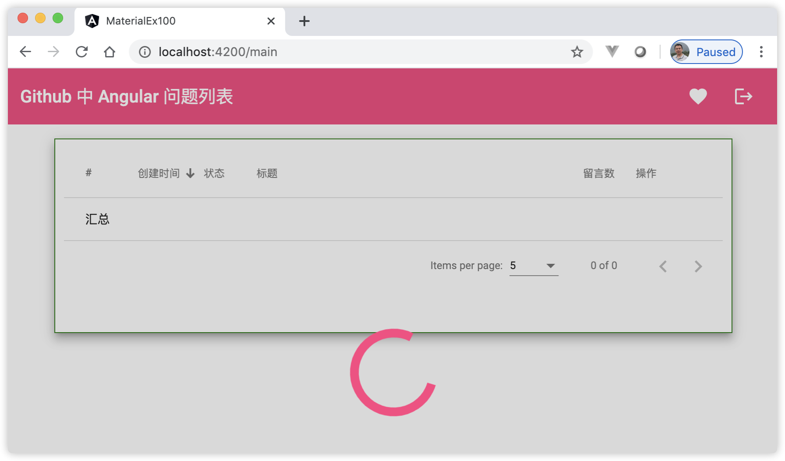
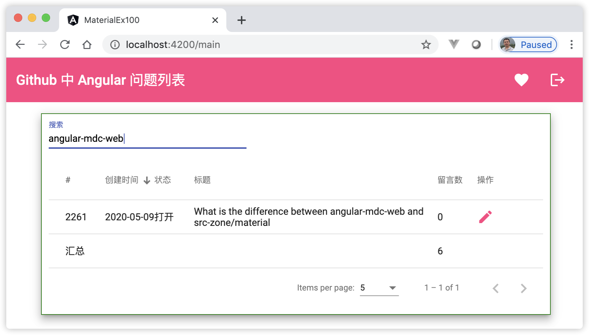
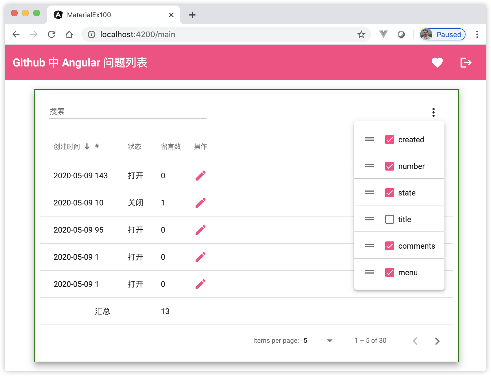
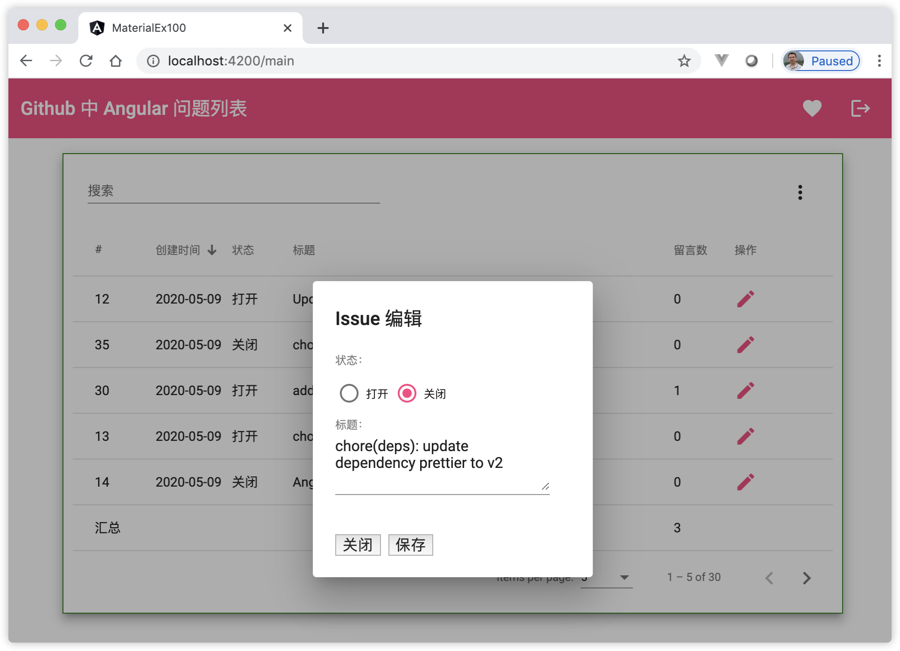

18 实战基于Angular Material实现表格组件¶
本章带领读者基于Angular Material实战一个真实的应用：用数据表格显示后端API返回的数据。要求实现如下功能：
用表格展示数据，要求对数据具有排序、分页、过滤的功能；
可以自定义显示、隐藏数据列；
可以对表格的数据列进行拖拽排序；
格式化显示表格中的数据，汇总统计表格列数据的总和；
数据加载时，表格数据处于加载状态时，显示加载效果;
可以对数据进行编辑。
为了完整的实战上述功能，同时将读者的精力尽量聚焦在Angular知识本身，本示例的后端数据依然选择GitHub上的开源API数据，这里选择Angular仓库的Issue数据。接下来，进入实战开发环节，具体步骤如下：
18.1 准备及创建Angular工程¶
本示例中的表格来自Angular Material的组件库，因此，需要准备及创建一个Angular工程，且安装好Angular Material的依赖包。
18.1.1 创建Angular工程¶
用Angular CLI构建应用程序，具体命令如下：
ng n material-ex100 -S --routing --defaults=true
在项目根目录下启动服务，具体命令如下：
ng serve
查看应用程序结果。打开Web浏览器并浏览到 “http://localhost:4200”，应该看到文本 “Welcome to material-ex100!”。
在上面的步骤中，完成的主要内容是：使用Angular CLI命令创建并初始化了一个Angular工程，该工程默认带有一个路由模块。
18.1.2 安装Angular Material依赖¶
安装 Angular Material，具体命令如下：
ng add @angular/material --defaults=true # defaults=true 表示问答时选择默认值
新建Material模块，具体命令如下：
ng g m material --route main --module app
查看应用程序结果。打开Web浏览器并浏览到 “http://localhost:4200/main”，在页面的底部应该可以看到文本 “material works!”。
在上面的步骤中，完成了以下内容：
安装了Angular Material依赖库；
新建了一个带路由功能的Material模块，同时，在根模块中通过延迟加载特性加载Material模块，默认延迟加载的子路由路径为“main”；
本应用中，单独新建的Material模块主要用来存放Angular Material的组件。
18.2 设计数据模型并创建数据结构¶
数据模型是连接业务与程序之间的桥梁，我们分解业务需要，将业务需求演变为具体的数据模型，进而创建出对应的数据结构。
18.2.1 设计Issue数据模型¶
GitHub上提供的查询API接口URL格式为：https://api.github.com/search/issues?q={query}{&page,per_page,sort,order}。该接口接受的查询参数分别介绍如下：
参数query：查询的关键字；
参数per_page：每页返回的记录数；
参数page：查询从第几页开始；
参数sort：指定进行排序的字段；
参数order：升序还是降序。
如查询关键字为angular的完整URL为：https://api.github.com/search/issues?q=angular&sort=created&order=desc&page=1&per_page=2，该URL查询的含义为：查询最近的angular问题列表，对查询结果进行分页，每页显示2条记录，返回第一页的结果。
Issue的API接口返回的信息很多，根据业务需求，我们挑选其中部分字段作为本应用的数据结构，比如，表格的列显示这些信息：Issue的唯一标识符、创建日期、状态、标题、回复数。接下来，根据这个业务模型，创建具体的数据结构。
18.2.2 创建数据结构¶
查看及分析上述接口返回的信息，我们定义1个接口类，用来表示Github Issue数据模型。
创建Github Issue数据模型接口，具体命令如下：
ng g i githubIssue
编辑Github Issue数据模型接口。编辑文件src/app/github-issue.ts，并将其更改为以下内容：
export interface GithubApi { items: GithubIssue[]; total_count: number; } export interface GithubIssue { created_at: string; number: string; state: string; title: string; comments: string; }
在上面的步骤中，GithubApi和GithubIssue接口中的字段名与Issue接口返回的对应字段名完全匹配。
18.3 创建页面布局¶
一般应用程序的页面设计都是从布局开始。我们大体构思下整体的页面布局，为了简单起见，页面布局分为上下两部分，上面是工具栏，下面放置将要实现的表格。接下来，从创建工具栏开始。
18.3.1 添加Angular Material的工具栏¶
Angular Material的工具栏是一个具有头（Header）、标题（Title）或操作的容器。组件用标签<mat-toolbar>表示，在工具栏中，我们放置两个小图标组件。
添加工具栏和图标模块依赖。编辑文件src/app/material/material.module.ts，并将其更改为以下内容：
import { NgModule } from '@angular/core'; import { CommonModule } from '@angular/common'; import { MaterialRoutingModule } from './material-routing.module'; import { MaterialComponent } from './material.component'; import { MatToolbarModule } from '@angular/material/toolbar'; import { MatIconModule } from '@angular/material/icon'; @NgModule({ declarations: [MaterialComponent], imports: [ CommonModule, MaterialRoutingModule, MatToolbarModule, // 工具栏 MatIconModule // 图标 ] }) export class MaterialModule { }
编辑Material组件模板。编辑文件src/app/material/material.component.html，并将其更改为以下内容：
<mat-toolbar color="accent"> <mat-toolbar-row> <span>Github 中 Angular 问题列表</span> <span class="example-spacer"></span> <mat-icon class="example-icon" aria-hidden="false" aria-label="收藏">favorite</mat-icon> <mat-icon class="example-icon" aria-hidden="false" aria-label="退出">logout</mat-icon> </mat-toolbar-row> </mat-toolbar>
编辑Material组件模板样式。编辑文件src/app/material/material.component.css，并将其更改为以下内容：
.example-icon { padding: 0 14px; } /* 工具栏图标靠右的样式 */ .example-spacer { flex: 1 1 auto; }
编辑根模块路由。编辑文件src/app/app-routing.module.ts，并将其更改为以下内容：
import { NgModule } from '@angular/core'; import { Routes, RouterModule } from '@angular/router'; const routes: Routes = [ { path: '', redirectTo: '/main', pathMatch: 'full' }, { path: 'main', loadChildren: () => import('./material/material.module').then(m => m.MaterialModule) }]; @NgModule({ imports: [RouterModule.forRoot(routes)], exports: [RouterModule] }) export class AppRoutingModule { }
编辑根组件模板。编辑文件src/app/app.component.html，并将其更改为以下内容：
<router-outlet></router-outlet>
查看应用程序结果。打开Web浏览器并浏览到 “http://localhost:4200”，页面显示效果如图18-1所示：
图18-1 使用Angular Material的工具栏
{kind=link}
在上面的步骤中，完成了以下内容：
单独创建了Material模块，并在其中添加了工具栏和图标模块的依赖；
在Material组件模板中添加了一个工具栏。注意example-spacer样式，它使用了flex属性，值为“1 1 auto”表示：将当前标签的宽度设置占满整个容器的剩余宽度，即工具栏中除了标题与mat-icon组件外，剩余的空间都被占满，因此，视觉上标题与mat-icon组件分两端显示；
修改了默认主路径，使其跳转到Material组件。
18.3.2 添加Angular Material的表格¶
Angular Material组件库中提供了一个支持 Material Design 样式的表格，可用来显示多行数据。表格组件用标签<mat-table>表示。mat-table组件分为3个部分：表格的数据源，列组件和行组件。
添加表格模块依赖。编辑文件src/app/material/material.module.ts，并将其更改为以下内容：
import { NgModule } from '@angular/core'; import { CommonModule } from '@angular/common'; import { MaterialRoutingModule } from './material-routing.module'; import { MaterialComponent } from './material.component'; import { MatToolbarModule } from '@angular/material/toolbar'; import { MatIconModule } from '@angular/material/icon'; import { MatTableModule } from '@angular/material/table'; import { MatPaginatorModule } from '@angular/material/paginator'; import { MatSortModule } from '@angular/material/sort'; @NgModule({ declarations: [MaterialComponent], imports: [ CommonModule, MaterialRoutingModule, MatToolbarModule, // 工具栏 MatIconModule, // 图标 MatTableModule, // 表格 MatPaginatorModule, // 表格的分页 MatSortModule // 表格的排序 ] }) export class MaterialModule { }
编辑根模块，增加HttpClientModule。编辑文件src/app/app.module.ts，并将其更改为以下内容：
import { BrowserModule } from '@angular/platform-browser'; import { NgModule } from '@angular/core'; import { AppRoutingModule } from './app-routing.module'; import { AppComponent } from './app.component'; import { BrowserAnimationsModule } from '@angular/platform-browser/animations'; import { HttpClientModule } from '@angular/common/http'; @NgModule({ declarations: [ AppComponent ], imports: [ BrowserModule, AppRoutingModule, BrowserAnimationsModule, HttpClientModule // HttpClient服务 ], providers: [], bootstrap: [AppComponent] }) export class AppModule { }
新建服务。使用命令
ng g s issue新建服务，并将文件src/app/issue.service.ts更改为以下内容：
import { Injectable } from '@angular/core'; import { HttpClient } from '@angular/common/http'; import { GithubApi } from './github-issue'; import { Observable } from 'rxjs'; @Injectable({ providedIn: 'root' }) export class IssueService { constructor(private http: HttpClient) { } getRepoIssues(sort: string, order: string, page: number): Observable<GithubApi> { const href = 'https://api.github.com/search/issues'; const requestUrl = `${href}?q=angular&sort=${sort}&order=${order}&page=${page + 1}`; return this.http.get<GithubApi>(requestUrl); } }
编辑Material组件。编辑文件src/app/material/material.component.ts，并将其更改为以下内容：
import { Component, AfterViewInit, ViewChild } from '@angular/core'; import { IssueService } from '../issue.service'; import { MatTableDataSource } from '@angular/material/table'; import { GithubIssue } from '../github-issue'; import { MatPaginator } from '@angular/material/paginator'; import { MatSort } from '@angular/material/sort'; import { merge, of } from 'rxjs'; import { startWith, switchMap, map, catchError } from 'rxjs/operators'; @Component({ selector: 'app-material', templateUrl: './material.component.html', styleUrls: ['./material.component.css'] }) export class MaterialComponent implements AfterViewInit { title = 'Github 中 Angular 问题列表' // 定义显示表格的列 displayedColumns: string[] = ['number', 'created', 'state', 'title', 'comments', 'menu']; // 使用管道显示对应的文字 dicMap: any = { 'open': '打开', 'closed': '关闭' }; // 定义表格接受的数据源 dataSource: MatTableDataSource<GithubIssue>; constructor(private issueService: IssueService) { } // 对应页面上的分页和排序组件 @ViewChild(MatPaginator, { static: true }) paginator: MatPaginator; @ViewChild(MatSort, { static: true }) sort: MatSort; ngAfterViewInit() { // 如果用户改变了排序顺序，则重置回第一页。 this.sort.sortChange.subscribe(() => this.paginator.pageIndex = 0); merge(this.sort.sortChange, this.paginator.page) .pipe( startWith({}), switchMap(() => { return this.issueService.getRepoIssues( this.sort.active, this.sort.direction, this.paginator.pageIndex); }), map(data => { return data.items; }), catchError(() => { return of([]); }) ).subscribe(data => { this.dataSource = new MatTableDataSource(data) this.dataSource.paginator = this.paginator; this.dataSource.sort = this.sort; }); } // 点击行操作时，触发的方法 onRowClicked(row) { console.log('点击行操作: ', row); } // 统计留言数 getTotalComments() { return this.dataSource?.data.map(t => +t.comments).reduce((acc, value) => acc + value, 0); } }
编辑Material组件模板。编辑文件src/app/material/material.component.html，并将其更改为以下内容：
<mat-toolbar color="accent"> <mat-toolbar-row> <span>{{title}}</span> <span class="example-spacer"></span> <mat-icon class="example-icon" aria-hidden="false" aria-label="收藏">favorite</mat-icon> <mat-icon class="example-icon" aria-hidden="false" aria-label="退出">logout</mat-icon> </mat-toolbar-row> </mat-toolbar> <div class="example-container mat-elevation-z8"> <div class="example-table-container"> <mat-table [dataSource]="dataSource" class="mat-elevation-z8" matSort matSortActive="created" matSortDisableClear matSortDirection="desc"> <ng-container matColumnDef="menu"> <mat-header-cell *matHeaderCellDef>操作</mat-header-cell> <mat-cell *matCellDef="let row"><mat-icon color="accent">edit</mat-icon></mat-cell> <mat-cell mat-footer-cell *matFooterCellDef></mat-cell> </ng-container> <ng-container matColumnDef="number"> <mat-header-cell *matHeaderCellDef mat-sort-header>#</mat-header-cell> <mat-cell *matCellDef="let row">{{row.number}}</mat-cell> <mat-cell mat-footer-cell *matFooterCellDef>汇总</mat-cell> </ng-container> <ng-container matColumnDef="title"> <mat-header-cell *matHeaderCellDef mat-sort-header>标题</mat-header-cell> <mat-cell *matCellDef="let row">{{row.title}}</mat-cell> <mat-cell mat-footer-cell *matFooterCellDef></mat-cell> </ng-container> <ng-container matColumnDef="state"> <mat-header-cell *matHeaderCellDef mat-sort-header>状态</mat-header-cell> <mat-cell *matCellDef="let row">{{row.state | i18nSelect: dicMap }}</mat-cell> <mat-cell mat-footer-cell *matFooterCellDef></mat-cell> </ng-container> <ng-container matColumnDef="comments"> <mat-header-cell *matHeaderCellDef mat-sort-header>留言数</mat-header-cell> <mat-cell *matCellDef="let row">{{row.comments}}</mat-cell> <mat-cell mat-footer-cell *matFooterCellDef>{{getTotalComments()}}</mat-cell> </ng-container> <ng-container matColumnDef="created"> <mat-header-cell *matHeaderCellDef mat-sort-header disableClear>创建时间</mat-header-cell> <mat-cell *matCellDef="let row">{{row.created_at | date:'yyyy-MM-dd'}}</mat-cell> <mat-cell mat-footer-cell *matFooterCellDef></mat-cell> </ng-container> <mat-header-row *matHeaderRowDef="displayedColumns"></mat-header-row> <mat-row *matRowDef="let row; columns: displayedColumns" (click)="onRowClicked(row)"></mat-row> <mat-footer-row *matFooterRowDef="displayedColumns"></mat-footer-row> </mat-table> </div> <mat-paginator [pageSizeOptions]="[5, 10, 25, 100]"></mat-paginator> </div>
编辑Material组件模板样式。编辑文件src/app/material/material.component.css，并添加以下内容：
/* 表格居中显示的样式 */ .example-container { min-height: 200px; margin: auto; margin-top: 1em; width: 85%; border: 1px solid green; padding: 10px; } .example-table-container { max-height: 500px; overflow: auto; } /* 表格列宽的样式 */ .mat-column-comments, .mat-column-number, .mat-column-state { max-width: 8%; } .mat-column-created { max-width: 10%; } .mat-column-menu { max-width: 10%; } .mat-column-title { max-width: 56%; }
查看应用程序结果。打开Web浏览器并浏览到 “http://localhost:4200”，页面显示效果如图18-2所示：
图18-2 使用Angular Material的表格
{kind=link}
在上面的步骤中，完成了以下内容：
在Material模块中添加了表格组件相关的模块依赖，分别是表格本身、分页和排序组件模块；
HttpClientModule属于核心模块，因此，将HttpClientModule导入到根模块中；
创建了IssueService服务，用于获取GitHub上Issue的数据；
往Material组件类中添加了很多属性和方法，在代码关键位置，标记了注释，帮助读者理解它们的含义。注意其中使用了merge操作符合并排序和分页的数据流，当它们发生变化时，触发查询Issue数据的服务，同时订阅返回的值绑定给表格的数据源；
在Material组件模板中增加了表格模板代码，mat-table表格分为列显示模板和行数据模板；列显示模板中定义了表头显示、单元格显示和表底汇总显示的内容模板；行数据模板中分别为列模板中的3个显示部分提供数据，替换列显示模板中的内容。同时，在表格行上添加了单击事件，触发onRowClicked()方法；
在Material组件模板样式中，分别设置了表格、列宽的样式，注意其中表格列样式的选择器；
页面加载完成后，默认每页显示5条Issue记录，记录一共有30条，可以单击列头的排序图标针对具体的列字段进行排序，也可以单击分页按钮进行分页浏览记录。至此，表格的排序和分页基本功能完成了，接下来，继续实现需求的其他功能。
18.4 实现加载中效果¶
当页面加载或刷新时，表格中加载远程的数据时，由于网络延迟等原因，会出现短暂的空白现象，按照需求，我们添加和完善这个加载显示效果。
Angular Material的Spinner组件是一个表示进度和活动的圆形指示符，组件用标签<mat-spinner>表示。
添加Spinner组件模块依赖。编辑文件src/app/material/material.module.ts，并添加以下内容：
import {MatProgressSpinnerModule} from '@angular/material/progress-spinner'; imports: [ // ... MatProgressSpinnerModule // 显示进度 ]
编辑Material组件。编辑文件src/app/material/material.component.ts，新增2个变量，并修改ngAfterViewInit()方法内容如下：
// 新增2个变量 isLoadingResults = true; // 表示是否加载完成，等于真时，显示加载进度 isRateLimitReached = false; // 表示接口是否异常，等于假时，表示无异常 ngAfterViewInit() { // 如果用户改变了排序顺序，则重置回第一页。 this.sort.sortChange.subscribe(() => this.paginator.pageIndex = 0); merge(this.sort.sortChange, this.paginator.page) .pipe( startWith({}), switchMap(() => { this.isLoadingResults = true; // 表示显示加载进度 return this.issueService.getRepoIssues( this.sort.active, this.sort.direction, this.paginator.pageIndex); }), map(data => { this.isLoadingResults = false; // 表示隐藏加载进度，数据加载完成 this.isRateLimitReached = false; // 表示无异常 return data.items; }), catchError(() => { this.isLoadingResults = false; // 表示隐藏加载进度 // GitHub API 接口有时候会限制访问次数 this.isRateLimitReached = true; // 表示无异常 return of([]); }) ).subscribe(data => { this.dataSource = new MatTableDataSource(data) this.dataSource.paginator = this.paginator; this.dataSource.sort = this.sort; }); }
编辑Material组件模板。编辑文件src/app/material/material.component.html，并增加以下内容：
<div class="example-loading-shade" *ngIf="isLoadingResults || isRateLimitReached"> <mat-spinner *ngIf="isLoadingResults" color="accent"></mat-spinner> <div class="example-rate-limit-reached" *ngIf="isRateLimitReached"> GitHub API 接口限制访问次数，请1分钟后再访问！ </div> </div>
编辑Material组件模板样式。编辑文件src/app/material/material.component.css，并增加以下内容：
.example-loading-shade { position: absolute; top: 0; left: 0; bottom: 56px; right: 0; background: rgba(0, 0, 0, 0.15); z-index: 1; display: flex; align-items: center; justify-content: center; } .example-rate-limit-reached { color: #980000; max-width: 360px; text-align: center; }
查看应用程序结果。刷新页面或者点击列排序时，页面上在数据加载完成前，会一直显示进度圈，页面显示效果如图18-3所示：
图18-3 使用Angular Material的进度圈组件
{kind=link}
在上面的步骤中，完成了以下内容：
新定义了2个布尔变量，变量isLoadingResults表示是否加载完成，值为真时，显示进度圈，反之，隐藏进度圈；GitHub API 接口有时候会限制访问次数，定义变量isRateLimitReached表示接口出现异常，值为真时，表示有异常，反之，无异常；
在组件类中，变量isLoadingResults的值默认为真，当在数据订阅完成之前，一直处于真状态，当订阅返回结果后，修改状态为假，则隐藏进度圈，表示数据加载完成；另，当接口数据异常时，我们也需要隐藏进度圈，否则页面会一直被屏蔽，这时使用变量isRateLimitReached的值决定页面上是否显示错误异常信息；
18.5 添加表格数据过滤的功能¶
按照需求，需要实现表格数据过滤功能，该功能的实现原理就是对表格的数据源进行数据过滤。
添加输入框组件模块依赖。编辑文件src/app/material/material.module.ts，并添加以下内容：
import { MatInputModule } from '@angular/material/input'; imports: [ // ... MatInputModule // 输入框 ]
编辑Material组件。编辑文件src/app/material/material.component.ts，新增1个过滤方法如下：
// 过滤数据 applyFilter(event: Event) { const filterValue = (event.target as HTMLInputElement).value; this.dataSource.filter = filterValue.trim().toLowerCase(); // 当过滤数据后，页数发生变化时，跳转到第一页 if (this.dataSource.paginator) { this.dataSource.paginator.firstPage(); } }
编辑Material组件模板。编辑文件src/app/material/material.component.html，并增加以下内容：
<!--紧跟着标签<div class="example-container mat-elevation-z8">后添加--> <form> <mat-form-field> <mat-label>搜索</mat-label> <input matInput (keyup)="applyFilter($event)" placeholder="输入过滤字符"> </mat-form-field> </form>
编辑Material组件模板样式。编辑文件src/app/material/material.component.css，并增加以下内容：
.mat-form-field { font-size: 14px; width: 40%; }
查看应用程序结果。刷新页面或者点击列排序时，页面上在数据加载完成前，会一直显示进度圈，页面显示效果如图18-4所示：
图18-4 使用Angular Material的输入框组件
{kind=link}
在上面的步骤中，完成了以下内容：
applyFilter()方法接受来自页面上传递的参数，在方法中获取输入值，并将其值转换小写字符，赋值给表格数据源实例对象的filter()方法；
表格数据源实例对象的类型是MatTableDataSource类，其背后搜索及过滤数据的原理是将每行记录的值全部合并在一起，形成一个大的字符串，然后与关键字进行模糊匹配，当合并的值中包含关键字时，表示匹配成功，最后，仅返回所有匹配上的行数据。比如：某行的原始数据{‘number’:’1445’, ‘title’:’angular’, ‘comments’:’component’}将被组合为字符串“1445angularcomponent”，当输入关键字“component”时，那么它将被认为是匹配的，因为在组合后的字符串中包含了“component”；
18.6 添加拖拽、隐藏及排序数据列功能¶
当表格的数据列比较多时，隐藏及排序数据列的需求成了多数表格组件中默认的行为功能。它的实现原理相对mat-table表格来说，相当简单，仅需要从行数据模板中删除以及重新排序对应的数据列即可。拖拽功能在Angular Material的CDK（开发工具包）提供了相应的原始组件实现。
添加菜单及拖拽组件模块依赖。编辑文件src/app/material/material.module.ts，并添加以下内容：
import { MatMenuModule } from '@angular/material/menu'; import { DragDropModule } from '@angular/cdk/drag-drop'; import { MatCheckboxModule } from '@angular/material/checkbox'; imports: [ // ... MatMenuModule, // 菜单 MatCheckboxModule, // 复选框 DragDropModule, // 拖拽 ]
编辑Material组件。编辑文件src/app/material/material.component.ts，新增如下内容：
menuColumns = [ { id: 'number', hide: true }, { id: 'created', hide: true }, { id: 'state', hide: true }, { id: 'title', hide: true }, { id: 'comments', hide: true }, { id: 'menu', hide: true } ] drop(event: CdkDragDrop<string[]>) { moveItemInArray(this.menuColumns, event.previousIndex, event.currentIndex); } getMenuColumns(): string[] { return this.menuColumns.filter(item => item.hide).map(item => item.id); } hideColumns(event: MatCheckboxChange) { const colName = event.source.name; const checked = event.checked; console.log(colName, checked); let index = this.menuColumns .map(item => item.id) .indexOf(colName); this.menuColumns[index].hide = checked; }
编辑Material组件模板。编辑文件src/app/material/material.component.html，并将原先的搜素框代码替换为以下内容：
<div class="example-container mat-elevation-z8"> <!--紧跟着标签<div class="example-container mat-elevation-z8">添加--> <mat-toolbar-row> <mat-form-field> <mat-label>搜索</mat-label> <input matInput (keyup)="applyFilter($event)" placeholder="输入过滤字符"> </mat-form-field> <span class="example-spacer"></span> <button mat-icon-button [matMenuTriggerFor]="menu"> <mat-icon>more_vert</mat-icon> </button> <mat-menu #menu="matMenu"> <div cdkDropList class="example-list" (cdkDropListDropped)="drop($event)"> <button class="example-box" *ngFor="let col of menuColumns" mat-menu-item cdkDrag> <mat-icon>drag_handle</mat-icon> <mat-checkbox (click)="$event.stopPropagation()" [checked]=col.hide [name]=col.id (change)="hideColumns($event)">{{col.id}}</mat-checkbox> </button> </div> </mat-menu> </mat-toolbar-row> 同时，将模板中的3个displayedColumns变量全部替换为“getMenuColumns()”方法。
编辑Material组件模板样式。编辑文件src/app/material/material.component.css，并增加以下内容：
/* 隐藏菜单图标 */ button{ border: 0ch; } /* 显示隐藏菜单 */ .example-list { max-width: 100%; min-height: 30px; display: block; background: white; border-radius: 4px; overflow: hidden; } .example-box { border-bottom: solid 1px #ccc; color: rgba(0, 0, 0, 0.87); display: flex; flex-direction: row; align-items: center; box-sizing: border-box; cursor: move; background: white; font-size: 14px; } .cdk-drag-preview { box-sizing: border-box; border-radius: 4px; box-shadow: 0 5px 5px -3px rgba(0, 0, 0, 0.2), 0 8px 10px 1px rgba(0, 0, 0, 0.14), 0 3px 14px 2px rgba(0, 0, 0, 0.12); } .cdk-drag-placeholder { opacity: 0; } .cdk-drag-animating { transition: transform 250ms cubic-bezier(0, 0, 0.2, 1); } .example-box:last-child { border: none; } .example-list.cdk-drop-list-dragging .example-box:not(.cdk-drag-placeholder) { transition: transform 250ms cubic-bezier(0, 0, 0.2, 1); }
查看应用程序结果。点击新增的菜单图标，弹出隐藏菜单，可以拖拽移动及反勾选这些菜单项，观察页面表格中数据列的变化。页面显示效果如图18-5所示：
图18-5 添加拖拽、隐藏及排序数据列功能
{kind=link}
在上面的步骤中，完成了以下内容：
在Material组件类中定义了一个新的数据列结构，menuColumns数组中由原先的基础上，在每项数据列上添加一个是否隐藏的标识，当用户勾选或者移除某数据列时，更新对应数据列的hide隐藏标识。同时，新增了getMenuColumns()方法，替代原先的模板中的displayedColumns变量值，该方法始终返回hide值为真的数据项；drop()方法对应用户拖拽菜单时的事件行为，调用CDK工具包中提供的moveItemInArray()工具方法对数组对象实现移位操作。hideColumns()方法仅是对用户操作菜单项时，找到menuColumns数组中对应的元素，根据用户操作的行为来修改元素的hide属性值；
在Material组件模板中新增了隐藏菜单组件。同时，将模板中表格列的数据来源全部替换为“getMenuColumns()”方法返回的结果；
图18-5所示的界面上，显示的是用户移除title数据列，同时，将创建时间列移动到菜单的首位时，表格的当前状态的效果图。
18.7 实现表格数据编辑功能¶
目前，表格还缺少记录编辑功能。如图18-5所示，在数据表格的最后一列，显示出了编辑的图标（铅笔），现在仅需在这个图标上实现编辑功能。编辑功能需要借助Angular Material提供的对话框组件来实现，当用户点击铅笔图标时，界面弹出一个对话框，对话框里面是关于当前表格行的表单记录信息，用户可以对表单记录进行编辑。
添加菜单及拖拽组件模块依赖。编辑文件src/app/material/material.module.ts，并添加以下内容：
import { MatDialogModule } from '@angular/material/dialog'; import { MatRadioModule } from '@angular/material/radio'; import { FormsModule } from '@angular/forms'; imports: [ // ... MatDialogModule, // 对话框 MatRadioModule, // 单选框 FormsModule // 表单 ]
新建对话框组件。使用命令
ng g c material/issueDialog -m=material新建Material模块下的组件，并将文件src/app/material/issue-dialog/issue-dialog.component.ts更改为以下内容：
import { Component, OnInit, Inject } from '@angular/core'; import { MatDialogRef, MAT_DIALOG_DATA } from '@angular/material/dialog'; import { GithubIssue } from 'src/app/github-issue'; @Component({ selector: 'app-issue-dialog', templateUrl: './issue-dialog.component.html', styleUrls: ['./issue-dialog.component.css'] }) export class IssueDialogComponent implements OnInit { constructor( public dialogRef: MatDialogRef<IssueDialogComponent>, @Inject(MAT_DIALOG_DATA) public data: GithubIssue) { } onNoClick(): void { this.dialogRef.close(); } ngOnInit(): void { } }
编辑对话框组件模板。编辑文件src/app/material/issue-dialog/issue-dialog.component.html，并将其更改为以下内容：
<h1 mat-dialog-title>Issue 编辑</h1> <div mat-dialog-content> <mat-label class="example-label">状态：</mat-label> <mat-radio-group aria-label="状态" [(ngModel)]="data.state" class="example-radio-group"> <mat-radio-button class="example-radio-button" value="open">打开</mat-radio-button> <mat-radio-button class="example-radio-button" value="closed">关闭</mat-radio-button> </mat-radio-group> <mat-form-field class="example-full-width"> <mat-label>标题：</mat-label> <textarea matInput [(ngModel)]="data.title" rows="3" cols="40"></textarea> </mat-form-field> </div> <div mat-dialog-actions> <button mat-stroked-button (click)="onNoClick()" style="font-size: 1em;">关闭</button> <button mat-button [mat-dialog-close]="data.title" cdkFocusInitial style="font-size: 1em; margin-left: 0.5em;">保存</button> </div>
编辑对话框组件模板样式。编辑文件src/app/material/issue-dialog/issue-dialog.component.css，并将其更改为以下内容：
.example-radio-group { display: flex; flex-direction: row; margin: 12px 0; font-size: 12px } .example-radio-button { margin: 5px; } .example-full-width { width: 230px; } .example-label { display: table-cell; font-size: 12px; margin-left: 8px; width: 120px; color: grey; } .button-size{ font-size:14px }
编辑Material组件。编辑文件src/app/material/material.component.ts，新增openDialog()方法，MaterialComponent类完整实战代码如下：
import { Component, AfterViewInit, ViewChild } from '@angular/core'; import { IssueService } from '../issue.service'; import { MatTableDataSource } from '@angular/material/table'; import { GithubIssue } from '../github-issue'; import { MatPaginator } from '@angular/material/paginator'; import { MatSort } from '@angular/material/sort'; import { merge, of } from 'rxjs'; import { startWith, switchMap, map, catchError } from 'rxjs/operators'; import { MatCheckboxChange } from '@angular/material/checkbox'; import { CdkDragDrop, moveItemInArray } from '@angular/cdk/drag-drop'; import { IssueDialogComponent } from './issue-dialog/issue-dialog.component'; import { MatDialog } from '@angular/material/dialog'; @Component({ selector: 'app-material', templateUrl: './material.component.html', styleUrls: ['./material.component.css'] }) export class MaterialComponent implements AfterViewInit { title = 'Github 中 Angular 问题列表' // 定义显示表格的列 // displayedColumns: string[] = ['number', 'created', 'state', 'title', 'comments', 'menu']; // 使用管道显示对应的文字 dicMap: any = { 'open': '打开', 'closed': '关闭' }; // 定义表格接受的数据源 dataSource: MatTableDataSource<GithubIssue>; isLoadingResults = true; // 表示是否加载完成，等于真时，显示加载进度 isRateLimitReached = false; // 表示接口是否异常，等于假时，表示无异常 constructor(private issueService: IssueService, public dialog: MatDialog) { } // 对应页面上的分页和排序组件 @ViewChild(MatPaginator, { static: true }) paginator: MatPaginator; @ViewChild(MatSort, { static: true }) sort: MatSort; ngAfterViewInit() { // 如果用户改变了排序顺序，则重置回第一页。 this.sort.sortChange.subscribe(() => this.paginator.pageIndex = 0); merge(this.sort.sortChange, this.paginator.page) .pipe( startWith({}), switchMap(() => { this.isLoadingResults = true; // 表示显示加载进度 return this.issueService.getRepoIssues( this.sort.active, this.sort.direction, this.paginator.pageIndex); }), map(data => { this.isLoadingResults = false; // 表示隐藏加载进度，数据加载完成 this.isRateLimitReached = false; // 表示无异常 return data.items; }), catchError(() => { this.isLoadingResults = false; // 表示隐藏加载进度 // GitHub API 接口有时候会限制访问次数 this.isRateLimitReached = true; // 表示无异常 return of([]); }) ).subscribe(data => { this.dataSource = new MatTableDataSource(data) this.dataSource.paginator = this.paginator; this.dataSource.sort = this.sort; }); } // 点击行操作时，触发的方法 onRowClicked(row) { console.log('点击行操作: ', row); } // 统计留言数 getTotalComments() { return this.dataSource?.data.map(t => +t.comments).reduce((acc, value) => acc + value, 0); } // 过滤数据 applyFilter(event: Event) { const filterValue = (event.target as HTMLInputElement).value; this.dataSource.filter = filterValue.trim().toLowerCase(); // 当过滤数据后，页数发生变化时，跳转到第一页 if (this.dataSource.paginator) { this.dataSource.paginator.firstPage(); } } drop(event: CdkDragDrop<string[]>) { moveItemInArray(this.menuColumns, event.previousIndex, event.currentIndex); } menuColumns = [ { id: 'number', hide: true }, { id: 'created', hide: true }, { id: 'state', hide: true }, { id: 'title', hide: true }, { id: 'comments', hide: true }, { id: 'menu', hide: true } ] getMenuColumns(): string[] { return this.menuColumns.filter(item => item.hide).map(item => item.id); } // 修改列属性 hideColumns(event: MatCheckboxChange) { const colName = event.source.name; const checked = event.checked; console.log(colName, checked); let index = this.menuColumns .map(item => item.id) .indexOf(colName); this.menuColumns[index].hide = checked; } //打开对话框 openDialog(githubIssue: GithubIssue): void { const dialogRef = this.dialog.open(IssueDialogComponent, { width: '300px', data: githubIssue }); dialogRef.afterClosed().subscribe(result => { console.log('The dialog was closed'); }); } }
提示
上述代码中仅修改constructor处的代码和新增的openDialog()方法与本步骤相关。由于本章前面叙述功能的实现步骤时，贴的相关类的代码都是部分的片段，没有提供全部的代码，同时也是为了节省篇幅，故这里贴出完整的实战代码，供读者参考。
编辑Material组件模板。编辑文件src/app/material/material.component.html，新增openDialog()方法，修改代码如下：
…… <mat-header-cell *matHeaderCellDef>操作</mat-header-cell> <mat-cell *matCellDef="let row"> <mat-icon color="accent" (click)="openDialog(row)">edit</mat-icon> <!-- 新增方法 --> </mat-cell> ……
查看应用程序结果。点击记录编辑图标，页面弹出对话框，可以对记录继续修改。页面显示效果如图18-6所示：
图18-6 添加对话框，实现表格数据编辑功能
{kind=link}
在上面的步骤中，完成了以下内容：
新建了对话框组件，在对话框组件类的构造方法中通过@Inject(MAT_DIALOG_DATA)装饰器注入GithubIssue类型数据，然后在对话框组件模板中，通过模板驱动表单对数据进行双向绑定；
在Material组件类中新增了openDialog()方法，该方法接受来自模板中传入的数据行记录信息，在方法中，调用MatDialog类的open()方法，实现打开对话框面板操作，同时，将dada数据作为参数传递到打开的对话框组件中。
18.8 自定义翻页组件¶
细心的读者可以已经注意到了，Angular Material组件库提供的翻页组件，显示在页面上的文字是英文“Items per page:”，这对本地化用户的体验来说，不是很友好，而且，甚至有些需求需要自定义显示特别的文字。自定义Angular Material组件其实很简单，分为2个步骤，一是继承组件父类，重写其中的方法，然后，通过配置供应商注册组件实例。下面继续实战介绍自定义翻页组件的详细实现步骤。
新建文件src/app/material/custom-mat-paginator-intl.ts，并添加以下内容：
import { Injectable } from '@angular/core'; import { MatPaginatorIntl } from '@angular/material/paginator'; @Injectable() export class CustomMatPaginatorIntl extends MatPaginatorIntl { constructor() { super(); this.getAndInitTranslations(); } getAndInitTranslations() { this.itemsPerPageLabel = "每页显示"; // 翻页组件前面的提示信息 this.nextPageLabel = "下一页"; // 鼠标悬停在图标上显示 this.previousPageLabel = "上一页"; // 鼠标悬停在图标上显示 this.changes.next(); } getRangeLabel = (page: number, pageSize: number, length: number) => { if (length === 0 || pageSize === 0) { return `0 / ${length}`; // 记录为空时 } length = Math.max(length, 0); const startIndex = page * pageSize; const endIndex = startIndex < length ? Math.min(startIndex + pageSize, length) : startIndex + pageSize; return `${startIndex + 1} - ${endIndex} / ${length}`; // 这里替换原先的提示信息 } }
注册CustomMatPaginatorIntl服务。编辑文件src/app/material/material.module.ts，新增providers属性，本类完整实战代码如下：
import { NgModule } from '@angular/core'; import { CommonModule } from '@angular/common'; import { MaterialRoutingModule } from './material-routing.module'; import { MaterialComponent } from './material.component'; import { MatToolbarModule } from '@angular/material/toolbar'; import { MatIconModule } from '@angular/material/icon'; import { MatTableModule } from '@angular/material/table'; import { MatPaginatorModule, MatPaginatorIntl } from '@angular/material/paginator'; import { MatSortModule } from '@angular/material/sort'; import { MatProgressSpinnerModule } from '@angular/material/progress-spinner'; import { MatInputModule } from '@angular/material/input'; import { MatMenuModule } from '@angular/material/menu'; import { DragDropModule } from '@angular/cdk/drag-drop'; import { MatCheckboxModule } from '@angular/material/checkbox'; import { MatDialogModule } from '@angular/material/dialog'; import { MatRadioModule } from '@angular/material/radio'; import { FormsModule } from '@angular/forms'; import { IssueDialogComponent } from './issue-dialog/issue-dialog.component'; import { CustomMatPaginatorIntl } from './custom-mat-paginator-intl'; @NgModule({ declarations: [MaterialComponent, IssueDialogComponent], imports: [ CommonModule, MaterialRoutingModule, MatToolbarModule, // 工具栏 MatIconModule, // 图标 MatTableModule, // 表格 MatPaginatorModule, // 表格的分页 MatSortModule, // 表格的排序 MatProgressSpinnerModule, // 显示进度 MatInputModule, // 输入框 MatMenuModule, // 菜单 MatCheckboxModule, // 复选框 DragDropModule, // 拖拽 MatDialogModule, // 对话框 MatRadioModule, // 单选框 FormsModule // 表单 ], providers: [{ provide: MatPaginatorIntl, // 注册CustomMatPaginatorIntl实例 useClass: CustomMatPaginatorIntl }] }) export class MaterialModule { }
查看应用程序结果。观察表格翻页组件，原先的英文更新成了中文。页面显示效果如图18-7所示：
{kind=link}
在上面的步骤中，完成了以下内容：
自定义组件类CustomMatPaginatorIntl继承了父类MatPaginatorIntl，getAndInitTranslations()方法主要是替换了英文提示信息和鼠标悬停在翻页图标上的提示语，而getRangeLabel()方法替换了页数显示信息，如：将原先的“6 - 10 of 30”替换成了“6 - 10 / 30”；
在MaterialModule中采用的是类提供商的配置方式注册CustomMatPaginatorIntl类实例，这样在整个Material模块内，默认的翻页组件都将被自定义的CustomMatPaginatorIntl类实例取代。
18.9 小结¶
本章主要是站在实战的角度，带领读者身临其境的感受真实项目的开发场景，通过一个真实的案例来引导读者一步步的实现它的功能。通过本章的学习，读者应该基本掌握了Angular Material的实战开发经验。